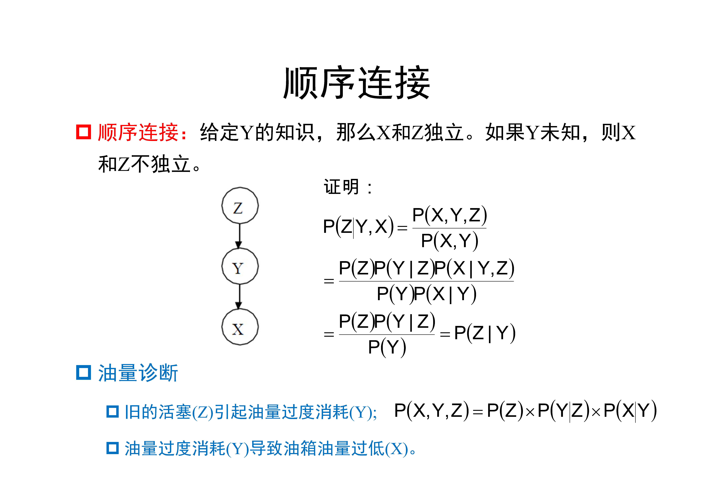
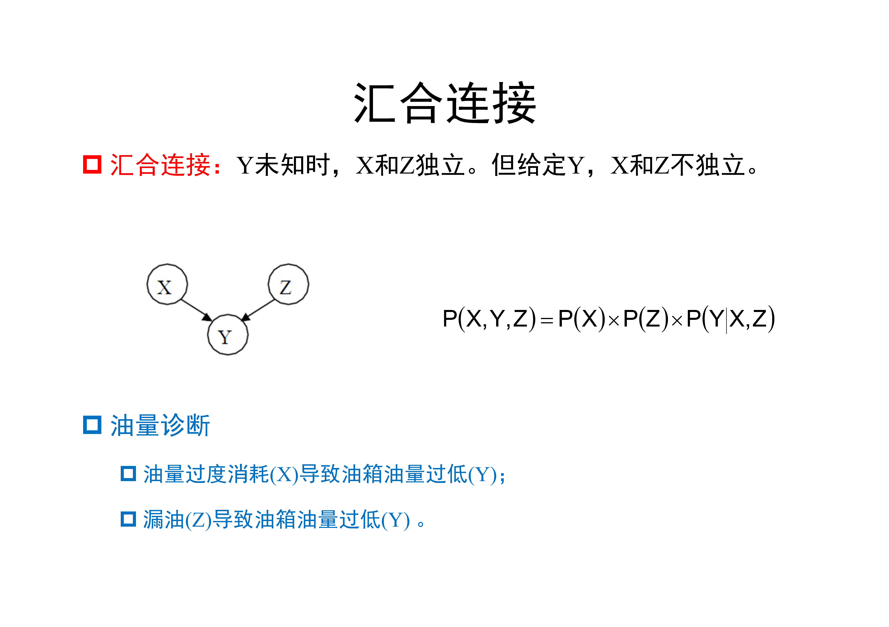
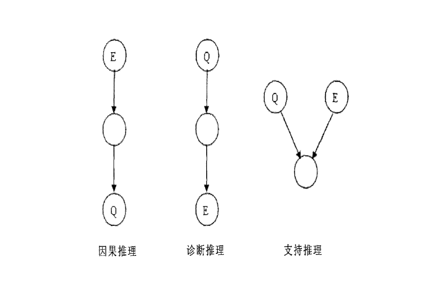

3,211 words in total, 12 minutes required. 1. 贝叶斯定理和贝叶斯网络模型 贝叶斯定理，其描述了看到新证据后对某个假设置信度（先验）的改变：如果证据与假设一致，该假设成立的概率则提高；如果不一致，则会降低。与概率（频率）学派认为概率是事件发生的频繁程度不同，贝叶斯学派认为概率是一种主观的置信程度，他们认为应该在新证据出现后，更新你所相信的假设。 1.1 频率派和贝叶斯派的思考 频率派： 需要推断的参数$\theta$是一个未知常数；同时，样本是随机的，因此重点研究对象为样本空间，大部分概率计算都是针对样本集$X$的分布进行的 贝叶斯派： 参数$\theta$是随机变量，样本$X$是固定的，由于样本是固定的，需要重点研究的对象为参数$\theta$的分布 贝叶斯思考问题的固定模式[2]： $\pi(\theta) + \chi \implies \pi(\theta|x)$即 先验分布 + 样本信息 可以得到 后验分布。 先验信息来源于经验和历史资料。后验分布一般认为是在给定样本$\chi$下$\theta$的条件分布，使得$\pi(\theta|x)$最大化的过程即最大后验估计（maximum a posterior），类似于经典统计学中的极大似然估计[3]。 好比是人类刚开始时对大自然只有少得可怜的先验知识，但随着不断观察、实验获得更多的样本、结果，使得人们对自然界的规律摸得越来越透彻。所以，贝叶斯方法既符合人们日常生活的思考方式，也符合人们认识自然的规律。[2] 鼎鼎大名的贝叶斯公式 $P(A \cap B) = P(B|A)P(A) = P(A|B)P(B)$ [2]中还给出了一个利于理解的拼写检查的实例。 1.2 贝叶斯网络模型那么贝叶斯网络和贝叶斯定理的关系是如何构建的呢？我们可以认为贝叶斯网络是一种基于概率推理的图形化网络模型，而贝叶斯公式（定理）则是这个概率网络的基础。 贝叶斯网络 是基于概率推理的数学模型,所谓概率推理就是通过一些变量的信息来获取其他的概率信息的过程，基于概率推理的贝叶斯网络（Bayesian network）是为了解决不定性和不完整性问题而提出的。其在1988年由Judea Pearl提出，也称为信度网络（Belief Network）。 一个贝叶斯网络是一个有向无环图（Directed Acyclic Graph, DAG），由代表变量结点及连接这些结点的有向边构成。 结点代表随机变量，结点间的有向边代表了结点间的互相关系（由父结点指向其后代结点），即条件依赖（conditional dependencies），用条件概率进行表达关系强度，没有父结点的用先验概率进行信息表达。 结点变量可以是任何问题的抽象，如：测试值，观测现象，意见征询等。适用于表达和分析不确定性和概率性的事件，应用于有条件地依赖多种控制因素的决策，可以从不完全、不精确或不确定的知识或信息中做出推理。 因果关系不能循环，即结果不能推回原因。 因此推理是图中的一条路径 朴素贝叶斯、马尔可夫链和隐马尔可夫模型都是贝叶斯网络的几种特例。 实际上，直接通过边连接的两个结点（如观测变量、隐变量等），描述了一种因果（或果因）关系。若父结点为$E$，子结点为$H$，则二者间的边的权值可以用条件概率$P(H|E)$。总之，把某个系统中涉及的随机变量，根据是否条件独立的情况构建在一个有向图中，就成为了一个贝叶斯网络。 2. 贝叶斯网络中的独立性 以下引用自[1]。 2.1 图的结构顺序（Serial）连接 head-to-tail 分支（Diverging）连接 tail-to-tail 汇合（Converging）连接 head-to-head 分支和汇合 2.2 $d$-可分（$d$-separation）如何判定贝叶斯网络中任意两个结点间是否独立，先给出$d$-可分的定义： $A$和$B$被一组随机变量$E$ $d$-可分，当且仅当它们间的所有路径都是堵塞的。 而堵塞的定义如下： 如果$A$到$B$上存在一个中间结点$V$，则路径为堵塞的: 连接是顺序或者分支的，$V$在$E$中。 连接是汇合的，则$V$和它的子结点都不在$E$中。 左边部分是head-to-tail，给定T时，A和X独立；右上角是tail-to-tail，给定S时，L和B独立；右下角是head-to-head，未给定D和/或M时，L和B独立 在有了$d$-可分关系后，我们可以对原本复杂的贝叶斯公司进行化简，如下： 一个公式化简的例子 3. 贝叶斯网络中的构建 定义变量 在领域知识下选择合适变量，或选择重要因子 结构学习 构建有向无环图 能够很好地解释数据，反映变量间的依赖关系或者独立性 不造成过拟合 参数学习 学习结点的分布参数，即每条边对应的条件概率分布 网络结构确定的步骤： 选择一组刻画问题的随机变量$\{ X_1, X_2, \ldots, X_n \}$ 确定一个变量顺序$a = \langle X_1, X_2, \ldots, X_n \rangle$ 参数学习从一个空图出发，按照顺序$a$逐个将变量加入$\xi$中 假设当前加入的变量是$X_i$，此时$\xi$中已经包含变量$X_1, \ldots, X_{i-1}$ 在$X_1, \ldots, X_{i-1}$中选择一个尽可能小的子集$\pi(X_i)$，使得假设“给定$\pi(X_i)$，$X_i$与$\xi$中其他变量条件独立”合理 从$\pi(X_i)$中每一个结点添加一条到$X_i$的有向边 4. 贝叶斯网络的结构学习 结构学习：在数据中推断变量之间的依赖关系，在可能的结构空间中搜索最优结构（基于专家的结构学习 vs. 基于数据的结构学习） 利用训练样本集，尽可能结合先验知识，确定和训练样本集合匹配最好的贝叶斯网络结构。 对于$n$个变量，可能的结构数目有以下关系 $f(n) = \sum_{i=1}^n (-1)^{i+1} \frac{n!}{i!(n-i)!} 2^{2(n-1)} f(n-i)$ 结构学习是一个典型的NP-Hard问题 基于搜索和评分的方法 利用评分函数，寻找与训练样本匹配最好的贝叶斯网络结构 $G^{*} = \arg\max\limits_{G \subseteq \xi} g(G:D)$ 贪婪算法 从一个特定网络出发（如一个没有任何连接边的网络） 利用搜索算法对网络进行操作（增加/删除边、反转边的方向） 根据评分函数对网络进行评分 检查新的网络结构是否优于旧的，如是，则继续 评分函数 1992年由Cooper and Herskovits首先提出K2评分函数，假设观测到的数据是完备的，且符合多项式分布 基于K2评分，Heckerman等人在1995年提出了BD评分函数，假设观测数据服从Dirichlet分布 搜索策略 贪婪搜索、模拟退火、禁忌搜索、遗传算法 等 5. 贝叶斯网络的推理 因果推理（自顶向下） 由原因退出结论，即根据一定原因，推理出在该原因下结果发生的概率 诊断推理（自底向上） 由结论推出原因，即根据产生结果，利用贝叶斯网推理算法，得出导致结果的原因的概率 支持推理 对发生的现象提供解释，目的是分析原因间的相互影响 贝叶斯网络推理分类 结合下图给出的实例，我们对不同的推理过程进行举例 一个实例 5.1 因果推理 已知网络中的祖先结点而计算后代结点的条件概率 假设已知某人吸烟$(S)$，计算其患气管炎$(T)$的概率$P(T|S)$ 由于$T$还有另一个因结点感冒$(C)$，对概率$P(T|S)$进行扩展 $P(T|S) = P(T, C|S) + P(T, \lnot C|S)$ 对第一项$P(T, C|S)$进行扩展，如下 $P(T, C|S)$$=$ $P(T,C,S)/P(S)$$=$ $P(T|C,S)P(C,S)/P(S)$$=$ $P(T|C,S)P(C|S)$$=$ $P(T|C,S)P(C)$ //由于$C$和$S$条件独立 同理，第二项$P(T, \lnot C|S)$可以扩展为$P(T|\lnot C,S)P(\lnot C)$。带入原公式，可以得到 $P(T|S) = P(T, C|S) + P(T, \lnot C|S)$ = $P(T|C,S)P(C)+P(T|\lnot C,S)P(\lnot C)$ 因此，在上例中，吸烟$S$引起气管炎$T$的概率可以计算为 $P(T|S) = 0.35 \cdot 0.8 + 0.1 \cdot 0.2 = 0.3$ 因果推理解题方法 对于所求的询问结点的条件概率，用所给证据结点和询问结点的所有因结点的联合概率进行重新表达。 对所得表达式进行适当变形, 直到其中的所有概率值都可以从问题贝叶斯网络的条件概率表（CPT, Conditional Probability Table）中得到。 将相关概率值代入概率表达式进行计算即得所求询问结点的条件概率。 5.2 诊断推理 已知网络中的后代结点而计算祖先结点的条件概率 假设已知某人患了气管炎$(T)$，计算其吸烟$(S)$的概率$P(S|T)$ $P(S|T) = \frac{P(T|S)P(S)}{P(T)}$ 根据上述因果推理，可以得到$P(T|S) = 0.3$。由于条件概率表中$P(S) = 0.4$，可得 $P(S|T) = \frac{0.3 \cdot 0.4}{P(T)} = \frac{0.12}{P(T)}$ 根据因果推理，我们还需要得到$P(T|\lnot S)$，如下 $P(T|\lnot S)$$= P(T,C|\lnot S) + P(T, \lnot C|\lnot S)$$= P(T|C, \lnot S)P(C) + P(T|\lnot C, \lnot S)P(\lnot C)$$= 0.25 \cdot 0.8 + 0.05 \cdot 0.2 = 0.21$ 根据以上和$P(\lnot S) = 0.6$，可以有 $P(\lnot S|T) = \frac{0.21 \cdot 0.6}{P(T)} = \frac{0.126}{P(T)}$ 由于存在关系$P(S|T) + P(\lnot S|T) = 1$，可以有 $\frac{0.12}{P(T)} + \frac{0.126}{P(T)} = 1 \implies P(T) = 0.246$ 则，可以进一步得到$P(S|T)$ $P(S|T) = \frac{0.12}{P(T)} = \frac{0.12}{0.246} = 0.4878$ 诊断推理解题方法 利用贝叶斯公式将诊断推理问题转化为因果推理问题 利用因果推理结果，导出诊断推理的结果 5.3 小结所有类型的贝叶斯网络都可以用精确算法来进行概率推理。但Cooper指出，贝叶斯网络中的精确概率推理是一个N－P难题。对于一个特定拓扑结构的网络，其复杂性取决于结点数。所以，精确算法一般用于结构较为简单的单联网络（Single connected）。对于解决一般性的问题，我们不希望它是多项式次复杂。因而，许多情况下都采用近似算法。它可以大大简化计算和推理过程，虽然它不能够提供每个结点的精确概率值[4]。 6. 先验概率的确定有了条件独立性假设就可以大大简化网络的推理计算。但是，与其他形式的不确定性推理方法一样，贝叶斯网络推理仍然需要给出许多先验概率，它们是根结点的概率值和所有子结点在其母结点给定下的条件概率值。 这些先验概率，可以是由大量历史的样本数据统计分析得到的，也可由领域专家长期的知识或经验总结主观给出的，或者根据具体情况事先假设给定。 如何根据联合概率分布求出先验分布，我们可以使用因子图和sum-product算法进行求解，请移步因子图介绍。 引用1.从贝叶斯定理到贝叶斯网络. ↩2.从贝叶斯方法谈到贝叶斯网络. ↩3.最大似然估计与最大后验概率的区别与联系. ↩4.什么是贝叶斯网络？ ↩ ← Previous Post Next Post→ To show LiveRe comment, please use JavaScript Table of Contents 1. 贝叶斯定理和贝叶斯网络模型1.1 频率派和贝叶斯派的思考1.2 贝叶斯网络模型2. 贝叶斯网络中的独立性2.1 图的结构2.2 $d$-可分（$d$-separation）3. 贝叶斯网络中的构建4. 贝叶斯网络的结构学习基于搜索和评分的方法5. 贝叶斯网络的推理5.1 因果推理5.2 诊断推理5.3 小结6. 先验概率的确定引用